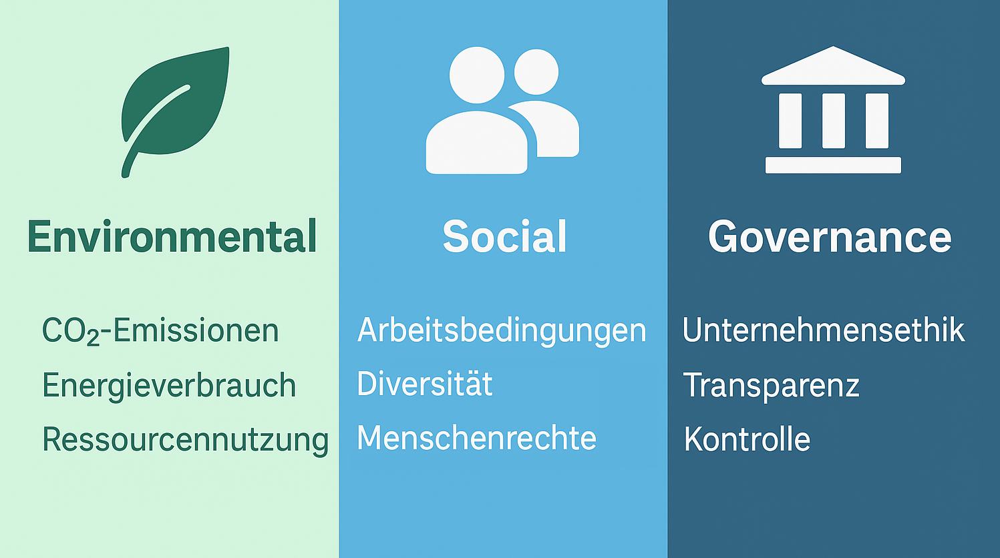
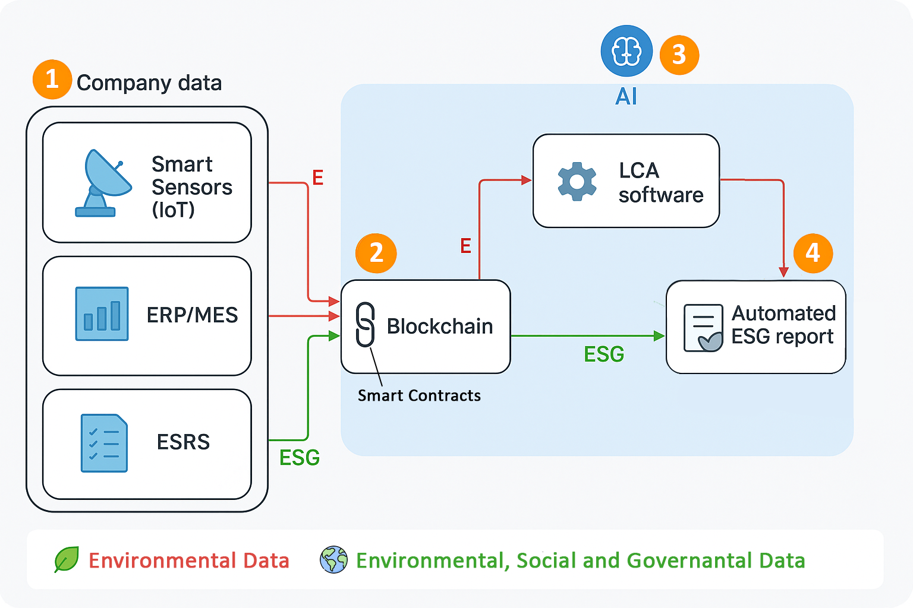

State-of-the-Art ESG & LCA – verständlich & messbar
Mehr erfahrenESG steht für Environmental, Social & Governance – drei zentrale Faktoren zur Bewertung der Nachhaltigkeit und sozialen Verantwortung von Unternehmen.
LCA ist eine Methode zur Analyse von Umweltauswirkungen über den gesamten Lebenszyklus eines Produkts oder einer Dienstleistung – von der Rohstoffgewinnung bis zur Entsorgung.
Um die Transparenz von Unternehmen zu verbessern, haben wir mithilfe einiger Quellen ein neues Modell entwickelt. Über die Smart Sensors, ERP/MES und ESRS werden Daten in eine sichere Blockchain geladen und mit einer LCA-Software analysiert. Durch die KI-Anbindung wird die Erstellung des LCA deutlich verbessert und standardisiert, sodass letztendlich ein automatisierter ESG Report entsteht.
Unser Vorschlag für einen automatisierten ESG-LCA Report